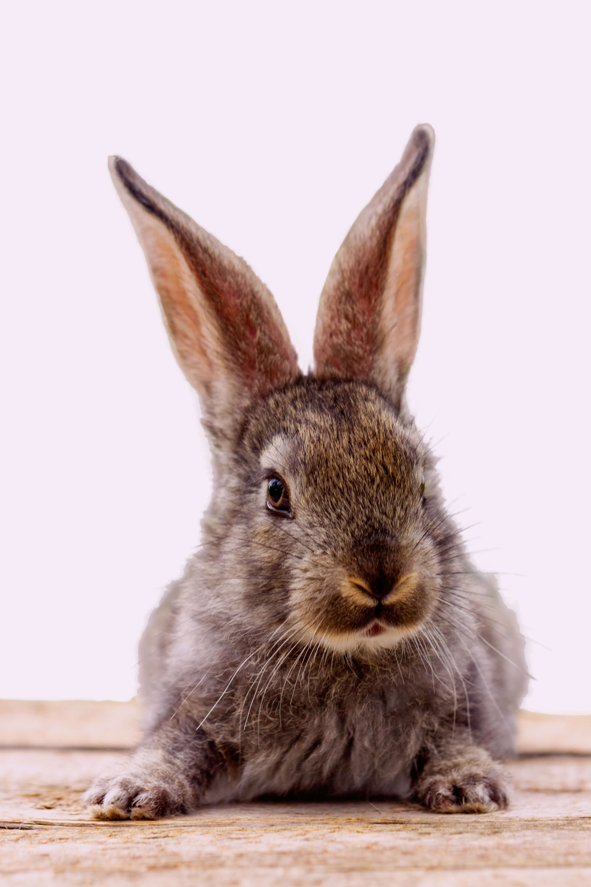
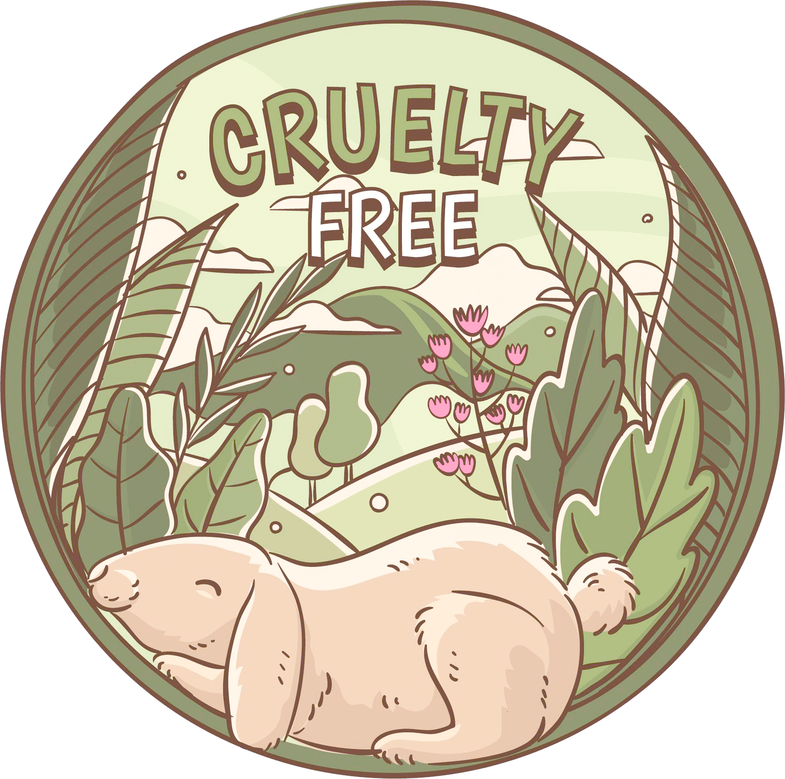

Desde 2006, Natura no realiza pruebas en animales ni para sus ingredientes, ni para sus productos finales, todo sin poner en peligro los rigurosos requisitos de seguridad y eficacia de los productos. Desde entonces, la compañía ha desarrollado más de 67 metodologías alternativas para evaluar la seguridad de sus productos en asociación con universidades brasileñas e internacionales e institutos de investigación.
Entre las innovaciones de esta etapa, cabe destacar el uso de herramientas de silicio (softwares capaces de predecir qué tan peligroso puede ser un ingrediente en función de su estructura molecular) y modelos 3D de piel y córnea equivalentes que permiten investigar la irritación y las alergias sin realizar pruebas en animales.
Buscamos actuar como protagonistas con respecto a esta causa y así formar una red de alianzas con el mundo académico, los laboratorios y las asociaciones profesionales con el fin de difundir y fomentar la práctica de la eliminación de pruebas con animales en el segmento cosmético local e internacional.